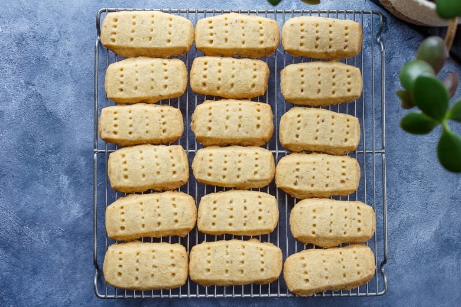

Shortbread Recipe

Ingredients
- 340g all-purpose flour
- 100g sugar
- 227g softened unsalted butter
- 1/2 tsp of salt
- (extra sugar to sprinkle on top)
Instructions
Heat oven to 375º F | 190 ºC | Gas 5
- Start by mixing the butter and sugar together, but DO NOT CREAM them. These two ingredients should be thoroughly amalgamated, but not creamed.
- Then add the flour and mix to a stiff consistency. Don't overwork the dough; stop when it just comes together.
- Roll out into the shape of a pan or tin you want to bake them in, thickness should be no less than 2cm
- Place it in the pan of your choice, Use a bench scraper or knife to cut the dough into fingers, then prick with a fork
- Place in preheated oven for 15 to 30 minutes or until slightly brown on edges. Sprinkle with sugar immediately upon removing from the oven.